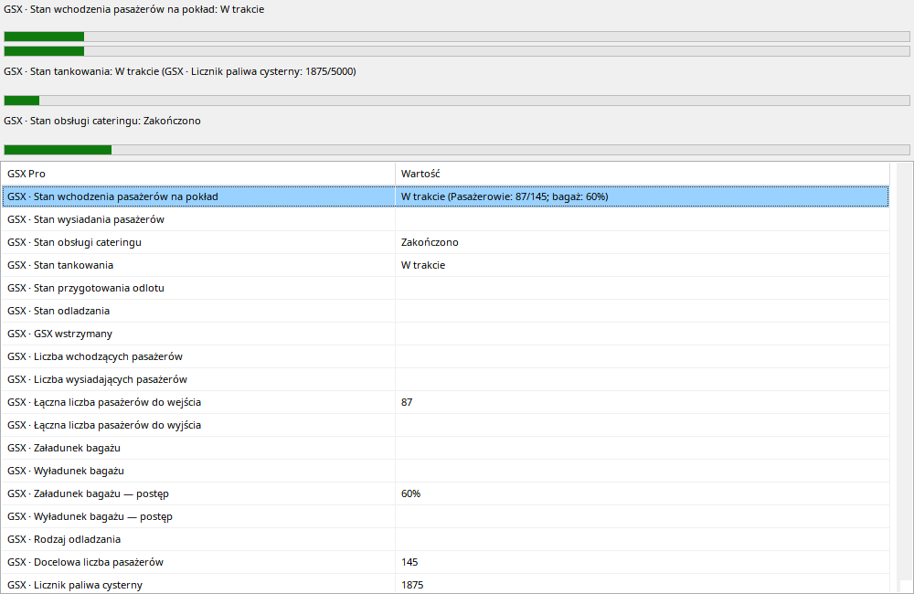

Us³uga przechodzi przez ¿¹danie, realizacjê i zakoñczenie wed³ug zmiennych GSX dostêpnych przy nagrywaniu. Pasek pojawia siê od Requested; gdy nie ma znanego celu, nie nale¿y czytaæ animacji jako procentu wykonania. Boarding mo¿e równolegle pokazywaæ pasa¿erów i cargo/baga¿e, a tankowanie iloœæ przekazan¹ i docelow¹. Po zmianie cysterny licznik mo¿e siê zresetowaæ. Przewijanie przywraca stan us³ugi i liczniki z przesz³oœci, bez uzupe³niania ich danymi z koñca lotu.
GSX musi byæ zainstalowany i wystawiaæ obs³ugiwane zmienne w chwili nagrywania.
| Opcja / czynnoœæ | Dzia³anie i ograniczenia |
|---|---|
| Requested | Pasek pojawia siê po ¿¹daniu us³ugi. To nie potwierdza przyjazdu pojazdu ani rozpoczêcia mierzonej pracy. |
| Boarding / deboarding | Dostêpne liczniki pasa¿erów/baga¿u/cargo i znane cele. Brak celu historycznego nie jest uzupe³niany przysz³ymi próbkami. |
| Tankowanie | Dostêpne iloœci przekazane/docelowe i stan cysterny. Mo¿liwe s¹ kolejne cysterny i reset licznika; licznik nie zawsze oznacza sumê dla lotu. |
| Pozosta³e | Catering, odlot/pushback i deicing wed³ug danych. Zakoñczenie bez pomiaru mo¿e byæ pokazane bez wymyœlania poœrednich liczników. |
| Replay | Cofanie przywraca dawny stan. Opisy s¹ t³umaczone, surowe pola SDK mo¿na sprawdziæ w Wartoœciach. |
